Thanks for looking! We have the following items for sale.
Click on any of the images for larger view.
Email swongyap@hotmail.com if interested.
Ikea sawhorses/trestle with shelf ($15) + formica tabletop ($15)
The tabletop (30"D x 60"W) is not Ikea. It is heavy-duty and spacious. The sawhorses are 27"T. The current sawhorses at Ikea don't have a shelf.
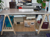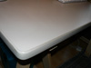
{kind=link}
{kind=link}
Brass Bed plus Trundle | $50
Nice brass single bed with trundle bed. Perfect for the kid.
40" wide x 36" tall
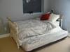
{kind=link}
Antique-style Wood Desk | $100
Excellent condition, gently used. Brass hardware.
53" wide x 24-1/2" deep x 29-1/2" tall
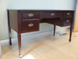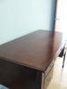
{kind=link}
{kind=link}
Double Brass Bed | $50
Excellent condition.
54" long from headboard to foot of bed
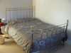
{kind=link}
Set of 6 upholstered dining chairs | $80
Set includes 2 with armrests and 4 without armrests. Sturdy and in good condition.
Chairs without arms: 40-1/2" T x 21" D x 20" W
Chairs with arms: 40-1/2" T x 21" D x 23" W
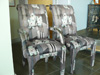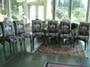
{kind=link}
{kind=link}
Antique wooden coat tree | $30
Nice, decorative coat tree with mirror. The semi-circular decorative piece you see attaches to the top of the coat tree. It's dusty, but just needs some care.
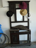
{kind=link}
Higher Ground Metro Laptop Bag | $40
This is a really great laptop bag that is designed for maximum protection of your machine. Fits laptops 15" and under. It's designed so that you technically never have to remove the laptop from the bag to use it, which reduces wear and tear that much more. It has a hard skeleton inside that totally protects the cargo, as well as non-slip foam pads that elevate the machine to allowing air underneath for cooling purposes. Shock-absorbent stretchy shoulder strap. Plenty of pockets for various nick-nacks. It's 2 months old and very lightly used. A small piece of rubber has broken off one of the zippers that has zero impact on functionality and very minimal impact on looks.
I'm selling this because it doesn't quite suit my purposes for bike riding, it's not a great bag for bike commuting. If you're a bus/car commuter, or if you fly around a lot, it's fantastic.
Full info on this bag can be found here: http://www.highergroundgear.com/metro.html
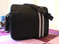
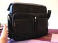
 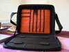
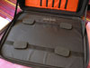
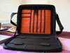
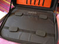
{kind=link}
{kind=link}
{kind=link}
{kind=link}